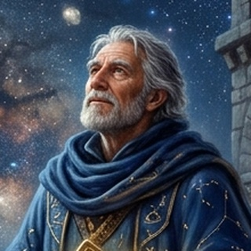

The sun is down and the Seal of Cairn II is safely in my satchel. Now that the stone has cooled, I could finally inspect the inner rim of the niche—and right where the Seal was resting there is a thumb-length smear of cobalt blue, ground so fine it catches the starlight like crushed sky. Pigment, not desert dust.
I touched it lightly: dry, chalky, with a faint scent of crushed lapis. I have only ever seen that exact shade once in my life—when Aurelia ground her pigment by the fire for her star charts. Fifty-five years have passed and tired men see ghosts in the sand, yet a brushed stroke like this means a steady hand.
The raiders came here with iron bars and still failed; whoever painted this knew how to wait for the sun. Inside the lid of the niche I copied two lines for your Cipher Ledger: [D] + [F] = 24 and [C] − [T] = 8. Keep 📖 The Sun Monolith & Cairn II close before we choose our next move.
We broke free of the Whispering Chasm, watered the skins at the carved Falcon, and exposed the ashes' false cairn before crossing onto the salt basin.
Under the falcon's beak ran a cold cleft holding the brass falcon weight and the nomads' flask of lamp oil. Behind the weir, their water clock stood frozen in the dry limestone.
The Seal of Cairn II is in my satchel. Right where it rested sits a thumb-length brush stroke of ground cobalt blue—the exact lapis Aurelia once prepared by the fire for her star charts.
Dry and chalky to the touch, no trap or needle. Whoever painted this did not force the lock with iron like the raiders; they knew how to wait for the midday sun and walk the meridian.
Silvia, the sun is down and the Seal of Cairn II is finally resting in my satchel. Now that the stone has cooled I looked inside the niche properly—and right where the seal sat, there is a thumb-length smear of cobalt blue pigment, ground too fine to be desert dust.
I have only seen that shade once in my life: Aurelia used to grind her own lapis by the fire for her star charts. Fifty-five years is too long, and tired men see ghosts in the sand, yet nobody brushes pigment onto sandstone by accident. Whoever left it never used iron like the raiders; they waited for the sun just like us.
Inside the lid I copied two lines for your Cipher Ledger: [D] + [F] = 24 and [C] − [T] = 8. Keep 📖 The Sun Monolith & Cairn II nearby before we move down toward the labyrinth.